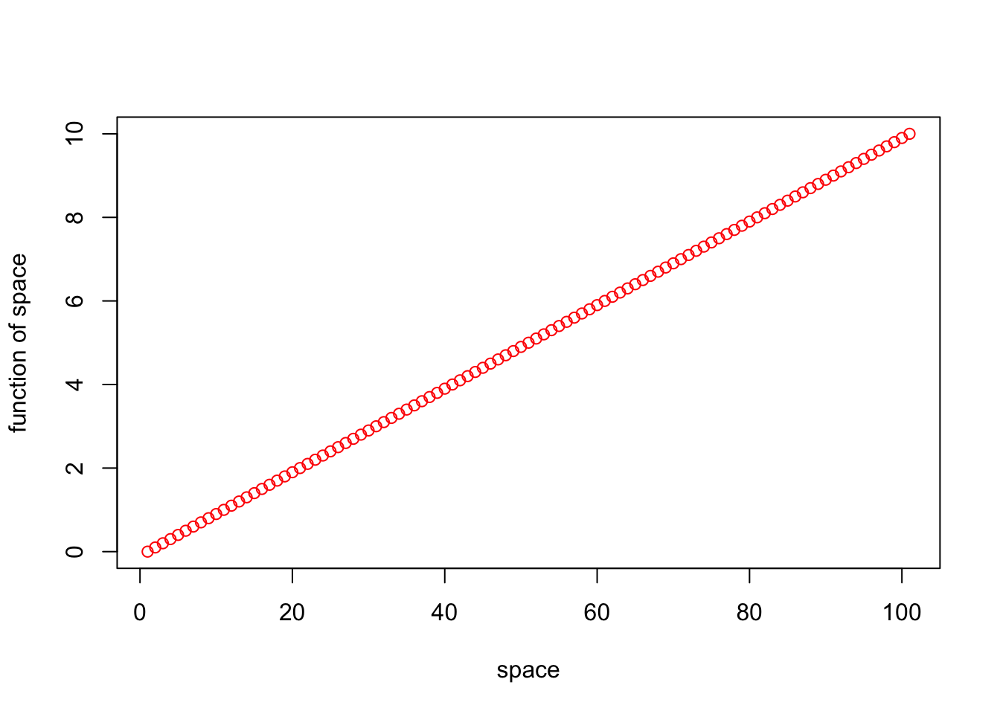
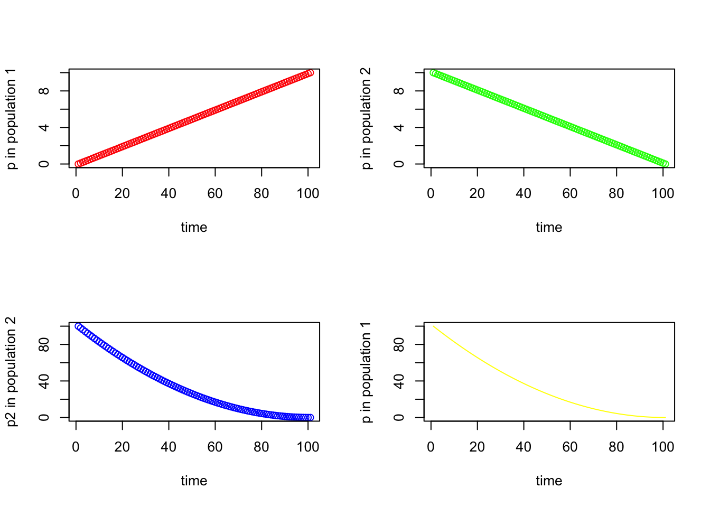

Using R Studio and Visual Studio Code (VSC) as script editors
R and Quarto Markdown
Vibe Coding with LLMs
Git and GitHub
What is a Shell Script?
Text file containing Unix commands
Automates repetitive tasks
Makes complex workflows reproducible
Essential for bioinformatics pipelines
Can include:
Variables and arrays
Conditionals (if/then/else)
Loops (for/while)
Functions
Command-line arguments
Creating Your First Script
#!/bin/bash# This is a shebang - tells system which interpreter to use# This is a comment - documents your codeecho"Hello, Bioengineering!"# Set a variableNAME="DNA Analysis"echo"Running $NAME"# Use command output as variableDATE=$(date +%Y-%m-%d)echo"Analysis date: $DATE"# Simple calculationCOUNT=5DOUBLE=$((COUNT*2))echo"Double of $COUNT is $DOUBLE"
Save as first_script.sh and run with bash first_script.sh
Making Scripts Executable
# Check current permissionsls-l first_script.sh# Make executable (add execute permission)chmod +x first_script.sh# Now you can run it directly./first_script.sh
Best practice: Always use chmod +x for your scripts
R statistical programming language
Why use R?
Good general scripting tool for statistics and mathematics
Powerful and flexible and free
Runs on all computer platforms
New enhancements coming out all the time
Superb data management & graphics capabilities
Reproducibility - can keep your scripts to see exactly what was done
You can write your own functions
Lots of online help available
Can use a nice GUI front end such as Rstudio
Can embed your R analyses in dynamic, polished files using Quarto Markdown
Quarto Markdown can be reused for websites, papers, books, presentations…
R scripts and Quarto Markdown
Often we want to write scripts that can just be run - R scripts
We can also embed code in Quarto Markdown files that provide more annotations
This improves interpertability and reproducibility
You can insert R code chunks into Quarto Markdown documents
R script basics
A series of R commands that will be executed
Can add comments using hashtags #
Can have pipes (|>) to connect one step to the next
BASICS of R
Commands can be submitted through the terminal, console or scripts
Notice on these slides I’m evaluating the code chunks and showing output
Also notice that R follows the normal priority of mathematical evaluation
4*4
[1] 16
(4+3*2^2)
[1] 16
Assigning Variables
A better way to do this is to assign variables
Variables are assigned values using the <- operator.
Variable names must begin with a letter, but other than that, just about anything goes.
Do keep in mind that R is case sensitive.
Assigning Variables
x <-2x *3
[1] 6
y <- x *3y -2
[1] 4
These do not work
3y <-33*y <-3
Arithmetic operations on functions
Arithmetic operations can be performed easily on functions as well as numbers.
Try the following, and then your own.
x+2x^2log(x)
Note that the last of these - log - is a built in function of R, and therefore the object of the function needs to be put in parentheses
These parentheses will be important, and we’ll come back to them later when we add arguments after the object in the parentheses
The outcome of calculations can be assigned to new variables as well, and the results can be checked using the ‘print’ command
Arithmetic operations on functions
y <-67print(y)
[1] 67
x <-124z <- (x*y)^2print(z)
[1] 69022864
STRINGS
Variables and operations can be performed on characters as well
Note that characters need to be set off by quotation marks to differentiate them from numbers
The c stands for concatenate
Note that we are using the same variable names as we did previously, which means that we’re overwriting our previous assignment
A good rule of thumb is to use new names for each variable, and make them short but still descriptive
STRINGS
x <-"I Love"print (x)
[1] "I Love"
y <-"Bioengineering"print (y)
[1] "Bioengineering"
z <-c(x,y)print (z)
[1] "I Love" "Bioengineering"
VECTORS
In general R thinks in terms of vectors (a list of characters, factors or numerical values).
It will benefit any R user to try to write programs with that in mind, as it will simplify most things.
Vectors can be assigned directly using the c() function and then entering the exact values.
VECTORS
x <-c(2,3,4,2,1,2,4,5,10,8,9)print(x)
[1] 2 3 4 2 1 2 4 5 10 8 9
x <-c(2,3,4,2,1,2,4,5,10,8,9)y <- x^2print(x)
[1] 2 3 4 2 1 2 4 5 10 8 9
print(y)
[1] 4 9 16 4 1 4 16 25 100 64 81
plot(x,y)
Basic Statistics
Many functions exist to operate on vectors.
Combine these with your previous variable to see what happens.
Also, try to find other functions (e.g. standard deviation).
Notice that the last function (sample) has an argument (replace=T)
Arguments simply modify or direct the function in some way
There are many arguments for each function, some of which are defaults
Getting Help
Getting Help on any function is very easy - just type a question mark and the name of the function.
There are functions for just about anything within R and it is easy enough to write your own functions if none already exist to do what you want to do.
In general, function calls have a simple structure: a function name, a set of parentheses and an optional set of parameters to send to the function.
Help pages exist for all functions that, at a minimum, explain what parameters exist for the function.
dnorm() generates the probability density, which can be plotted using the curve() function.
Note that is curve is added to the plot using add=TRUE
Visualizing Data
So far you’ve been visualizing just the list of output numbers
Except for the last example where I snuck in a hist function.
You can also visualize all of the variables that you’ve created using the plot function (as well as a number of more sophisticated plotting functions).
Each of these is called a high level plotting function, which sets the stage
Low level plotting functions will tweak the plots and make them beautiful
Visualizing Data
What do you think that each of the arguments means for the plot function?
A cool thing about R is that the options for the arguments make sense.
Try adjusting an argument and see if it works
Note- most people use the package GGPlot2 for nice scientific graphics
Visualizing Data
seq_1 <-seq(0.0, 10.0, by =0.1) plot (seq_1, xlab="space", ylab ="function of space", type ="p", col ="red")

Putting plots in a single figure
On the next slide
The first line of the lower script tells R that you are going to create a composite figure that has two rows and two columns. Can you tell how?
Now, modify the code to add two more variables and add one more row of two panels.
seq_1 <-seq(0.0, 10.0, by =0.1)seq_2 <-seq(10.0, 0.0, by =-0.1)
Putting plots in a single figure
par(mfrow=c(2,2))plot (seq_1, xlab="time", ylab ="p in population 1", type ="p", col ='red')plot (seq_2, xlab="time", ylab ="p in population 2", type ="p", col ='green')plot (seq_square, xlab="time", ylab ="p2 in population 2", type ="p", col ='blue')plot (seq_square_new, xlab="time", ylab ="p in population 1", type ="l", col ='yellow')

Creating Data Frames in R
As you have seen, in R you can generate your own random data set drawn from nearly any distribution very easily.
Often we will want to use collected data.
Now, let’s make a dummy dataset to get used to dealing with data frames
Set up three variables (hydrogel_concentration, compression and conductivity) as vectors